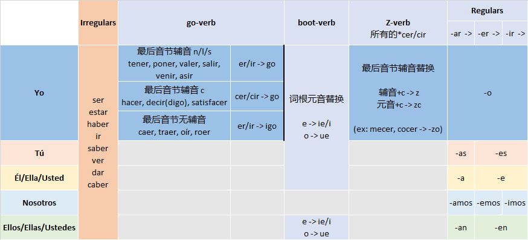
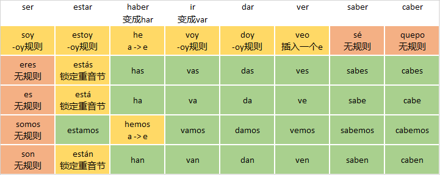

陈述式现在时 Presente
陈述式现在时在英语中直接对应是一般现在时，跟英语一般现在时的用法完全一致。或者可以说，任何英语的一般现在时的表达，对应到西班牙语都是陈述式现在时：
Hablo español. -> I speak Spanish.
¿Juegas al fútbol? -> Do you play football?
但是，在日常口语中也常用陈述式现在时来表达英语中的现在进行时的意思（通常联系上下文来理解），例如：
Ahora mismo hablo español. -> Right now, I am speaking Spanish.
陈述式现在时的动词需要根据主语人称来变位，例如动词hablar（speak）在不同人称之后的变为如下。
| 西班牙语 | 英语 |
|---|---|
| Yo hablo español | I speak Spanish. |
| Tú hablas español | You speak Spanish. |
| Él / Ella habla español | He/She speaks Spanish. |
| Nosotros hablamos español | We speak Spanish. |
| Ellos / Ellas hablan español | They speak Spanish. |
注意：按照之前提到的，我们在本教程所有的变位中都将省去第二人称复数vosotros的变位。
最标准的动词变位规则是将动词原型的词尾（一般是-ar/-er/-ir）按照人称替换为相应的变位词尾。标准的词尾替换如下（表中空格表示与左侧相同）：
| -AR | -ER | -IR | |
|---|---|---|---|
| ejamplo: | hablar | comer | vivir |
| Yo | -o | - | |
| Tú | -as | -es | |
| Él/Ella/Usted | -a | -e | |
| Nosotros | -amos | -emos | -imos |
| Ellos/Ellas/Ustedes | -an | -en |
但是，西班牙语存在大量不规则或“半规则”的变位形式，这是我接下来要讲解的重点。
我将陈述式现在时的全部变位规则浓缩到下面这张陈述式现在时变位Matrix。只要记住了这个“Presente Matrix”，就记住了陈述式现在时的全部变位规则（包括不规则部分）。

接下来我们将从左到右逐条讲解这张表格中的每一条具体规则。
1. 完全不规则动词
陈述式现在时总共有8个完全不规则的变位动词，全部都是高频动词：
| Ser (be) | Estar (be) | Haber (have) | Ir (go) | Dar (give) | Ver (see) | Saber (know) | Caber (fit) | |
|---|---|---|---|---|---|---|---|---|
| Yo | Soy | Estoy | He | Voy | Doy | Veo | Sé | Quepo |
| Tú | Eres | Estás | Has | Vas | Das | Ves | Sabes | Cabes |
| Él / Usted | Es | Está | Ha | Va | Da | Ve | Sabe | Cabe |
| Nosotros | Somos | Estamos | Hemos | Vamos | Damos | Vemos | Sabemos | Cabemos |
| Ellos / Ustedes | Son | Están | Han | Van | Dan | Ven | Saben | Caben |
其实这8个动词也并非完全无规则，可以按照下表进一步“正则化”。其中绿色格子里面都是标准规则，黄色格子表示“局部规则”或者小变动，只有橙色部分才是完全无规则。

上面表格里用到了一个“记忆小技巧”（trick）：有些不规则的动词变位，如果先把它变型成另一个词（haber -> har, ir -> var），你就会发现它的变位立刻“规则”多了。这并非毫无逻辑的“纯粹trick”。很多时候，这种“让变位看起来规则多了的那个变型”可能是这个单词的“历史原型”（或其变体），而这个单词的变位其实是从它的“历史原型”基于规则得到的。只不过后来动词原形发生了变化，但变位却没有跟着一起变，这种“时空错位”才让变位显得非常“不规则”。我们后面在其它时态的动词变位里面还会用到这个“transformation trick”。
Ser v.s. Estar
从上表可以看出英语的系动词be在西班牙语中对应了两个单词：ser和estar。它们分别表示两种不同的“是”。Ser表述的是主语的内禀属性、固定属性、永久属性，而estar表述的是主语在语句中所处时刻的当时状态。如果你对计算机编程语言有所了解，那么ser表达的类似于常量，而estar表达的类似于变量。
有一个口诀帮大家快速记忆两者用法的区别：
| SER | ESTAR |
|---|---|
| DOCTOR | PLACE |
| Description (描述) Occupation (职业) Characteristic (特征) Time (时间) Origin (产地) Relationship (关系) |
Position (位置) Location (地点) Action (正在进行的动作 - 进行时) Condition (状况) Emotion (情绪) |
大家可以通过以下对比来体会两者的差别：
| 示例 | 表达含义 | 解析 | |
|---|---|---|---|
| Ser | Yo soy profesor. | I am a teacher. 我是老师。 |
职业/身份 (这是我的一部分) |
| Estar | Yo estoy enfermo. | I am sick. 我生病了。 |
健康状态 (暂时的，会改变) |
| Ser | Ella es inteligente. | She is smart. 她很聪明。 |
固有特质 (性格描述) |
| Estar | Ella está triste. | She is sad. 她很伤心。 |
情绪 (暂时的心情) |
| Ser | Nosotros somos de China. | We are from China. 我们要来自中国。 |
国籍/出处 (不可改变的根源) |
| Estar | Nosotros estamos en Nueva York. | We are in New York. 我们在纽约。 |
当前物理位置 (GPS坐标) |
| Ser | Son las tres. | It is 3 o'clock. 现在是三点。 |
时间 (时间属于定义范畴) |
| Estar | El libro está en la mesa. | The book is on the table. 书在桌子上。 |
物体位置 |
下面是ser和estar接同一个形容词但是表达不同意思的对比示例：
| Ser - 本质/定义 | Estar - 状态 | 核心区别 |
|---|---|---|
| Soy feliz. I am a happy person. (我是一个生性快乐的人) |
Estoy feliz. I am happy (right now). (我现在很高兴) |
性格 vs. 心情 前者定义你的天性，后者描述当下的情绪 |
| Eres guapo. You are handsome. (你长得很帅) |
Estás guapo. You look handsome (today). (你今天打扮得很帅) |
长相 vs. 观感 前者是对颜值的评价，后者是对当前状态的赞美 |
| Es nervioso. He is a nervous person. (他是个神经质/易焦虑的人) |
Está nervioso. He is nervous (right now). (他现在很紧张) |
个性 vs. 状态 前者指性格敏感焦虑；后者指当下感到紧张 |
甚至可以在一句话里面在ser和estar后面同时用相反的形容词，例如：
Soy feliz, pero hoy no estoy feliz.
(I am a happy person, but I am not happy today.)
2. Go-verbs
这一组我们称之为go-verbs的动词总共有13个，都是-er/-ir动词。Go-verbs的“特殊规则”在于其yo变位的词尾不是简单替换-er/-ir，而是要把最后的整个音节变成go，但是按照原来最后音节的辅音又分成以下三种情况：
| 最后音节辅音 | 单词列表 | 词尾替换方式 | Note |
|---|---|---|---|
| n/l/s | tener, poner, valer, salir, venir, asir | er/ir -> go | 保留辅音，替换er/ir |
| c | hacer, decir(digo), satisfacer | cer/cir -> go | 整个音节替换成go。实际上是因为c和g发同一个音，因此合并了 |
| 无辅音 | caer, traer, oír, roer | er/ir-> igo | 替换er/ir，但是在go前面要插入i |
以上是规则总结，而变位后的具体结果如下表：
| Infinitive | English / 中文 | Yo变位 |
|---|---|---|
| Tener | have (有 / 拥有) | Tengo |
| Poner | put / place (放 / 安置) | Pongo |
| Valer | be worth (值 / 有价值) | Valgo |
| Salir | go out / exit (出去 / 离开) | Salgo |
| Venir | come (来) | Vengo |
| Asir | grasp / seize (抓住) | Asgo |
| Hacer | do / make (做 / 制造) | Hago |
| Decir | say / tell (说 / 告诉) | Digo (e -> i) |
| Satisfacer | satisfy (满足) | Satisfago |
| Caer | fall (掉落 / 跌倒) | Caigo |
| Traer | bring (带来) | Traigo |
| Oír | hear (听见) | Oigo |
| Roer | gnaw (啃 / 咬) | Roigo |
注意go-verbs仅有其yo变位执行”特殊规则“，而其它变位则跟随标准规则或者”半标准规则“进行，即沿着陈述式现在时变位roadmap继续往右执行。
Haber v.s. Tener
注意到tener和haber都是对应英语的have，这其实是因为英语的have是一个多功能词，它的不同语法功能在西语里面被拆解到了不同的单词上面。我们在下面表格中展示了这种拆解。注意我们把英语的there is结构也一并包含在这个表中，因为它在西语中对应haber第三人称变位的无人称（impersonal）形式hay（=ha y）。
| 英语结构 | 英语例子 | 英语语法功能 | 西语对应 | 西语例子 |
|---|---|---|---|---|
| have | I have eaten. | 完成时的助动词 | haber | He comido. |
| have | I have a car. | “拥有” | tener | Tengo un coche. |
| have to | I have to go. | “不得不/必须“ | tener que | Tengo que ir. |
| There is/are | There is a car. | 表示存在 | haber (hay) | Hay un coche. |
Note：上表中的“He comido.”其实就是西语的现在完成时，本教程将不会专门学习这个时态，因为在日常使用中可以用简单过去时来代替。但是你只要记住这个haber+过去分词（动词原型词尾变ado/ido）的形式，就可以在阅读中识别并理解现在完成时。换句话说，你只要看到he/has/ha/hemos/han + *ado/ido的结构，就可以知道这是西语的现在完成时。如果你能通过过去分词识别出动词原形，那你就完全能读懂这句话的意思。
3. Boot-verbs
接下来是一大类我们称之为boot-verbs（靴子动词）。Go-verbs的“特殊规则”在于，除了nosotros/vosotros之外的变位，其词根要进行元音替换（stem-change，也叫元音裂变）。这些动词一般比较“脆弱”，当重音落在词根（stem）上时，词根里的元音受不了压力，就会发生变形。
之所以叫boot-verbs是因为涉及到的变位是图中黄色部分，像一个靴子，所以叫boot verbs.
| Yo | Nosotros |
| Tú | Vosotros |
| Él/Ella/Usted | Ellos/Ellas/Ustedes |
Boot-verbs的stem-change有三种：
e -> ie
o -> ue
e -> i
以下表格列出了常见boot-verbs的第三人称单数变位，展示它们在变位中式如何进行元音替换（stem-change）的，其它三个变位（yo/tú/ellos）的元音替换都是一样的。
| e -> ie | él变位 | o -> ue | él变位 | e -> i | él变位 |
|---|---|---|---|---|---|
| querer (想要) | quiere | poder (能/可以) | puede | pedir (请求/点菜) | pide |
| pensar (想/认为) | piensa | dormir (睡觉) | duerme | servir (服务/有用) | sirve |
| empezar (开始) | empieza | volver (返回) | vuelve | repetir (重复) | repite |
| entender (明白) | entiende | encontrar (找到) | encuentra | seguir (跟随/继续) | sigue |
| perder (丢失) | pierde | recordar (记得) | recuerda | conseguir (获得) | consigue |
| preferir (偏爱) | prefiere | almorzar (吃午饭) | almuerza | vestir (给...穿衣) | viste |
| sentir (感觉/遗憾) | siente | contar (数/讲述) | cuenta | reír (笑) | ríe |
| cerrar (关闭) | cierra | costar (花费) | cuesta | elegir (选择) | elige |
| mentir (撒谎) | miente | doler (疼) | duele | medir (测量) | mide |
| sentar (使坐/适合) | sienta | morir (死) | muere | despedir (解雇/告别) | despide |
| despertar (叫醒) | despierta | mostrar (展示) | muestra | competir (竞争) | compite |
| comenzar (开始) | comienza | mover (移动) | mueve | corregir (改正) | corrige |
| recomendar (推荐) | recomienda | probar (尝试) | prueba | freír (油炸) | fríe |
| regar (浇水) | riega | soñar (做梦) | sueña | ||
| divertir (逗乐) | divierte | volar (飞) | vuela | ||
| hervir (煮沸) | hierve | llover (下雨) | llueve | ||
| confesar (坦白) | confiesa | resolver (解决) | resuelve | ||
| defender (保卫) | defiende | torcer (扭/拧) | tuerce | ||
| encender (点燃) | enciende | cocer (烹饪) | cuece | ||
| tener (有) | tiene | ||||
| venir (来) | viene | jugar (玩) | juega | decir (说) | dice |
注意列表最后两行标下划线的三个特殊情况：
tener/venir是前面提到的go-verb，但同时也是stem-changing verbs，两者并不矛盾（参见前面的“roadmap”）。Go-verb规则仅仅影响yo变位，而且在执行了“go规则”之后就不再执行其它规则（tener -> tengo, venir -> vengo）;
decir也是go-verb，但它是唯一的在yo变位也要进行e -> i替换的go-verb;
jugar是唯一的u -> ue替换的单词，暂且挂靠在o -> ue这个类别。
派生词的变位
上面表中列出的都是“基础动词”（verbos primitivo）。而基于这些基础动词通过加前缀产生的派生词也都继承相同的规则。例如sonreír（微笑）从reír（笑）派生而来，因此也就继承了reír的boot规则（进行相同的stem-change）：sonreír -> sonríe。
几个更多的派生词变位的例子如下：
| 基础动词 | 变位 | 派生词 1 | 变位 | 派生词 2 | 变位 | 派生词 3 | 变位 |
|---|---|---|---|---|---|---|---|
| tener | tengo tienes tiene |
mantener 维持 |
mantengo mantienes mantiene |
contener 包含 |
contengo contienes contiene |
detener 阻止 |
detengo detienes detiene |
| venir | vengo vienes viene |
convenir 适合/协定 |
convengo convienes conviene |
prevenir 预防 |
prevengo previenes previene |
intervenir 干预 |
intervengo intervienes interviene |
| poner | pongo pones pone |
componer 组成 |
compongo compones compone |
proponer 提议 |
propongo propones propone |
suponer 假设 |
supongo supones supone |
3. Z-verbs
在“go-verb规则”和“boot-verb规则”之后，理论上已经没有其它的“特殊规则”了。但是注意到yo变位的词尾是-o，如果把-er/-ir替换为-o，这是一个“跨组元音替换”（从e/i组跨到了a/o/u组），就可能会触发辅音字母被动适配。不过presente的“辅音字母被动适配”要略微复杂一点，分两种情况：
如果cer/cir之前是辅音，就进行标准的“辅音字母被动适配”：按照变量辅音表简单的将c -> z即可；
如果cer/cir之前是元音，就不是标准的“辅音字母被动适配”， 而是c -> zc（ 此处辅音发生了改变，变成了/sko/）。 （有两个例外：mecer -> mezo, cocer -> cuezo)
在以上规则都被执行之后，剩下的就是标准的按照-ar/-er/-ir词尾的标准变位规则。
我们再次将陈述式现在时变位Matrix列在下面，并且梳理一遍“Presente Matrix”的使用方法。
要得到任何一个动词的陈述式现在时变位，我们只需要从左到右执行“Presente Matrix”的逻辑：
首先，如果它属于8个“完全不规则动词”，则单独处理；
如果我们要的是yo变位，那么先看这个词是否属于go-verb（总共13个）。如果是，则按照go-verb规则取得其yo变位；
然后我们看这个词是否属于boot-verb。如果是，那么我们则要执行stem-change（但是注意stem-change不适用于nosotros/vosotros变位）；
最后我们执行规则动词变位的词尾替换，但是在yo变位的词尾替换（ie/ir -> o）过程中可能会触发辅音字母被动适配（详见Z-verb规则）。